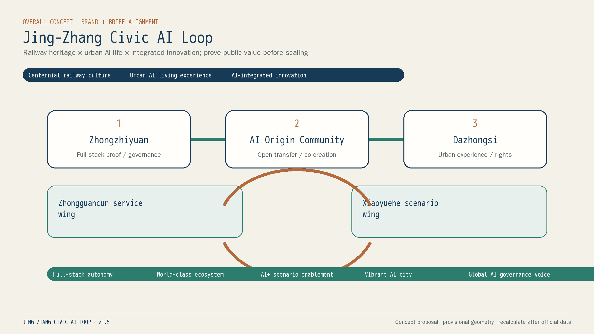
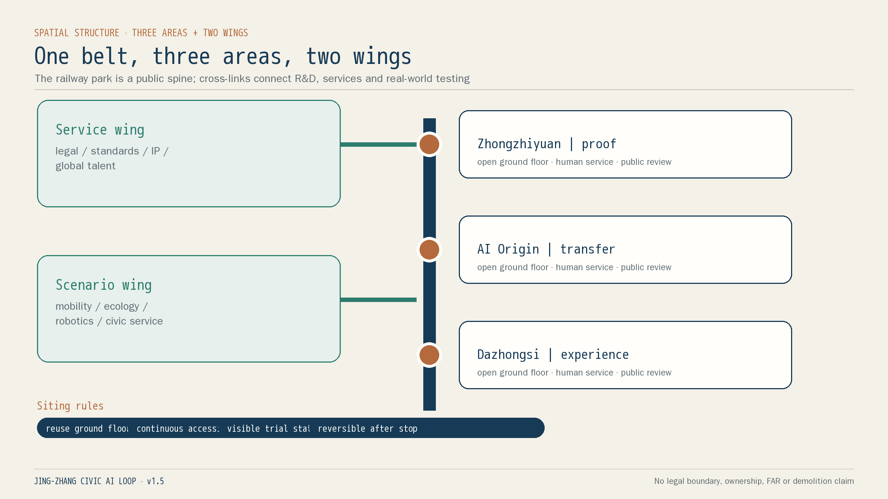
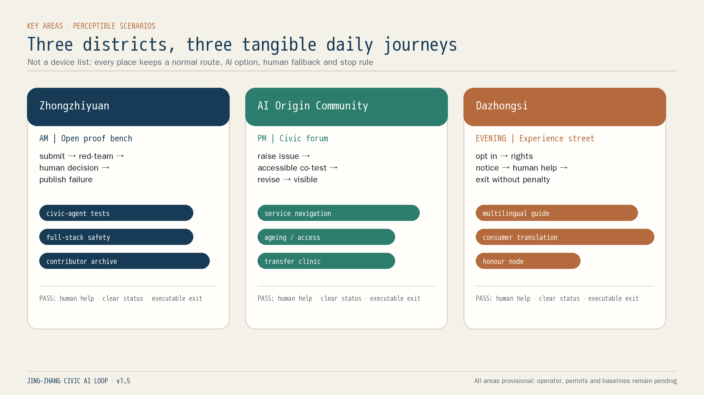
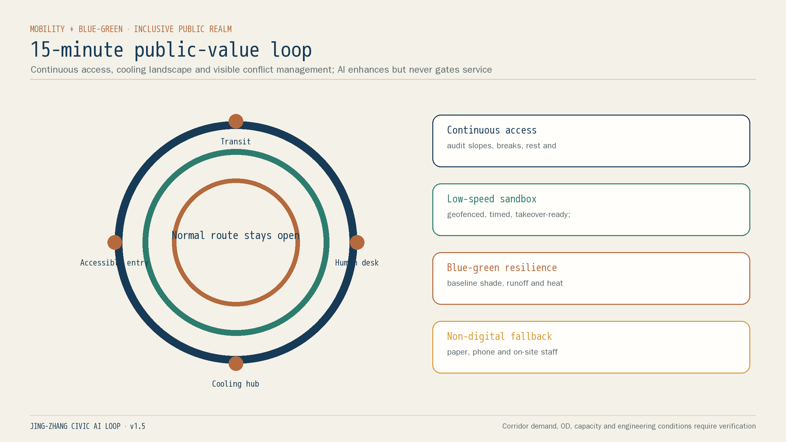

Jing-Zhang Civic AI Loop: An Open Belt for Verifiable Urban Agents
A public-interest proving ground where urban AI must earn trust before it scales.
Jing-Zhang Civic AI Loop: An Open Belt for Verifiable Urban Agents
> **v1.8 visual-correction review status.** Package-level checks have passed, while all spatial figures still use repository provisional geometry with low aggregate confidence. They support conceptual review only—not official redlines, statutory controls, property, engineering, or precise-area claims. Official geometry must trigger coordinated recalculation.
**Motto: Every urban intelligence must withstand public scrutiny.**
Executive brief: a public acceptance line, not another “AI park”
The scarce asset is not another closed compute room but a walkable public infrastructure where residents, researchers, firms, operators and regulators can decide whether an urban intelligence deserves to enter the city. Zhongzhiyuan tests the stack and safety; the AI Origin Community turns research prototypes into participatory neighbourhood services; Dazhongsi tests public experience and consumer rights. The two wings provide professional support and bounded real-world tasks.
The six Taskbook agents become one delivery contract: 12 scenario cards, three falsifiable pilot protocols, AP0—AP7 action packages, G0—G4 gates, five resource ledgers and a civic-agent receipt. The first 90 days prepare evidence, repair one accessible public chain, establish staffed/paper/phone fallback and run synthetic-data rehearsals. Only P1 may begin after G0—G2 evidence is complete; any unresolved severe safety, rights or data issue stops the trial. Boundaries, title, statutory controls, cost, procurement, real operators and performance baselines remain **unknown/pending** until lawfully verified.
Four machine-readable artefacts make the proposal handover-ready: visual/assets/delivery-matrix.json, pilot-protocols.json, civic-agent-receipt.schema.json and asset-rights.json. The included receipt is a synthetic example, not evidence of a live project.
Taskbook at a glance: three positions, five functions, three areas and two wings
- **Three positions:** heritage belt becomes a continuous public narrative; AI life-experience belt becomes optional everyday tasks; AI-integrated innovation belt requires verification before translation.
- **Five functions:** full-stack autonomy maps to Zhongzhiyuan validation; world-class ecology to AI Origin open translation; AI+ scenarios to bounded Xiaoyue River trials; vibrant intelligent city to Dazhongsi public experience; global governance voice to bilingual open protocols and annual review.
- **Spatial loop:** the three areas perform stack verification—open translation—urban experience, while the two wings provide professional services—real-world scenarios; each function has a first acceptance item.
|Taskbook intent|Spatial–operating translation|First acceptance item| |---|---|---| |Centennial Jing-Zhang cultural belt|Rail alignment, stations and mileage form a continuous public narrative|Three-time-layer wayfinding and fact review| |Urban AI life-experience belt|AI is optional within walking, service, retail and cultural tasks|Accessible task chain, staffed fallback and appeal| |AI-integrated innovation belt|Research prototypes must pass spatial safety, public co-testing and independent evaluation|Open challenge library, P1–P3 protocols and Run Receipts| |Full-stack autonomous AI system|Zhongzhiyuan validates tools, models, agents and robots together|Versioned test plan and hard stop lines| |World-class AI innovation ecology|AI Origin Community links universities, open source, small teams and civic needs|Translation clinic and open task passport| |New AI+ scenario paradigm|Xiaoyue River Wing provides bounded, timed and takeover-ready tests|Baseline, comparison and human fallback| |Vibrant intelligent city|Dazhongsi and the public spine embed understandable experiences in daily life|Experience street, honour node and non-digital route| |Global voice in AI governance|Publish bilingual protocols, failures, templates and contribution lineage|Annual public review and reusable open components|
The three areas perform **stack verification—open translation—urban experience**; the two wings provide **professional services—real-world scenarios**. Cross-regional task passports may connect nearby communities, the Future Science City, Huairou Science City, Beijing E-Town and Beijing–Tianjin–Hebei partners, but only through voluntary agreements that name data permission, site responsibility, stop conditions and output licences. Unconfirmed organisations are never presented as committed partners.
**Brand system.** The concept mark uses twin rails, three nodes and an open gap: continuity plus dual human-machine verification, the three areas, and public entry into review. Colours are Rail Blue #173B57, Verification Green #2D7D6E and Heritage Copper #B46A3C. Naming scales from Civic AI Loop to Proof Hub, Civic Test Point and Run Receipt. The original mark is assets/figures/civic-loop-logo.en.svg; it must not imitate government identity, accept corporate naming rights or cover risk signage. International message: **A century-old railway becomes a civic proving ground where urban AI must earn public trust before it scales.**
Evidence and method
This open co-creation proposal does not replace statutory planning, government approval, engineering design, or accountable human judgment. It relies on the official announcement, Agent Taskbook, public site package, processed fact pack, and source registry [source:OFFICIAL-ANNOUNCEMENT] [source:AGENT-TASKBOOK] [source:SITE-PACKAGE] [source:PROCESSED-FACT-PACK] [source:SOURCE-REGISTRY]. Its method binds evidence, assumptions, design action, metric, responsible role, and exit trigger. Urban agents follow data minimisation, meaningful choice, appeal, human review, version logs, and independent evaluation.

One belt, three areas, two wings, one verification loop
The heritage park is a free everyday public spine. Zhongzhiyuan provides full-stack tools and safety testing; the AI Origin Community connects research, start-ups, residents and open-source contributors; Dazhongsi hosts native service and public experience. The Zhongguancun wing provides legal, IP, talent, finance and international services; the Xiaoyuehe wing offers bounded mobility, ecology, health and robotics tasks. Problems move through discovery, sandbox, public experience and evidence deliberation; results determine scale, repair, pause or exit.
The spatial strategy prioritises existing ground floors, railway nodes, bridge-edge and residual spaces over demolition. No bridge, tunnel, underground, heritage or traffic conclusion is made without specialist review. Logo and signage use an original dual-track/verification-loop language, with heritage brown, public-service blue and trial-status green/yellow; no corporate marks or restricted fonts are embedded.

Comparative learning and innovation ecosystem
Six references are translated rather than copied: AI Verify contributes standardised public-interest testing; Barcelona 22@ mixed reuse without its real-estate scale; Brainport mission collaboration without single-anchor dependency; Sidewalk Toronto warns against platform-led data governance; Kendall Square informs walkable research exchange without displacement; Nanshan informs fast scenario iteration but not speed over safety. All policy, finance and attraction mechanisms remain proposals, not commitments.
The ecosystem shares eight resources: compute access, trustworthy data rooms, model evaluation, open-source legal support, first-use scenarios, patient capital interfaces, international talent service and public-procurement evidence. A task passport names the problem owner, site steward, technical team, affected groups, data, budget assumption, trial term, stop rule and licence before any cross-area project begins.
Twelve AI+ scenarios and three proving grounds
1. Accessible-route assistant: anonymous barriers, user-confirmed route, human repair owner. 2. Crowd-flow advice: aggregate counts only; an accountable operator issues any instruction. 3. Multilingual heritage guide: no identity recognition; historians approve factual content. 4. Community-service navigator: voluntary inputs, paper and staffed alternatives. 5. SME compliance copilot: authorised documents, expert final review, no legal determination. 6. Open compute scheduler: minimal task metadata and equitable access for small teams. 7. Low-speed delivery: bounded time/route, no facial recognition, remote takeover. 8. Microclimate advice: environmental sensors only, landscape-professional review. 9. Age-friendly health navigation: no diagnosis, clear human referral. 10. Service translation: on-device where possible; no profile-based pricing. 11. Public-safety review assistant: de-identified incidents, never automated enforcement. 12. Civic-issue synthesis: de-identified text and random human audit for viewpoint coverage.
The three proving grounds test (a) urban-service agents for truth, explanation and handoff, (b) robots for bounded physical safety, and (c) SME models for privacy, copyright and bias. They are controlled trials, not approved operations.
Spatial section and five interfaces
Three layers overlap without surrendering the public realm: a free, accessible walking layer; a clearly bounded reversible-trial layer; and an urban-service layer that places compute, legal help, evaluation, appeal and maintenance in existing buildings. Trials may never displace basic access, green space or non-digital service.
|Interface|Design action|AI boundary|Human acceptance| |---|---|---|---| |Rail heritage–community|Pocket spaces and slow streets retain historic traces|Guide, repair reporting and crowd advice only|Heritage experts, subdistrict and residents| |Campus ground floor–street|Openable ground floors, shared rooms, prototype windows|Booking/translation, not rights or access decisions|Operator verifies hours and duty staff| |Station–park|Shade, seating, water, accessible interchange and lighting|Aggregate flows, no facial recognition|Transport, fire and accessibility review| |River green–test site|Ecological buffer first; robots on hard surface in fixed periods|No identifiable-person collection|Landscape, water and safety officers| |Commercial street–civic room|Quiet, family and staffed spaces|No profiling price or manipulative design|Consumers, merchants and subdistrict review|
A conceptual 15-minute public-value loop links a verified history point, non-digital service, prototype experience, feedback point and appeal/exit point. Actual accessibility cannot be claimed until official road, slope, crossing and facility data support route-by-route network analysis. Existing buildings pass a retain–adapt–demolish decision tree: verify title and structural safety; retain usable fabric; adapt valuable but underperforming fabric with reversible components; consider removal only through lawful process and demonstrated public benefit.
Spatial control book: from diagram to auditable section
Before official survey, title and specialist inputs arrive, every control is labelled either **statutory value pending** (redlines, FAR, height, setbacks, parking and fire), **field measurement pending** (clear width, slope, canopy, noise, heat and footfall), or **concept performance** (continuous, reversible, accessible and recoverable). Every number carries source, date, measurer, scope and replacement trigger.
|Place component|Conceptual section/action|Verify before works|Observable performance| |---|---|---|---| |Heritage slow spine|Movement, stay and ecological-buffer bands; detachable additions|Heritage impact, title, width/slope, fire and utilities|Closed gaps, accessible-task success, usable shade/rest| |Cross-stitch point|Improve existing crossing, light, guidance and waiting first|Flows, signals, sightline, drainage, accessibility and egress|Wait, near misses, slowest-user crossing time| |Open campus ground floor|Staffed service, shared rooms and transparent test window; separate back-of-house|Structure, fire, title, hours, noise and MEP capacity|Free hours, handoff success, non-consumption use| |Pocket proving point|Status board, human stop, seating, edge device and recoverable ground interface|Permit, power, weather, slip/child safety, maintenance and restoration|Stop drills, complaint closure, fallback continuity| |River/green edge|Keep devices off sensitive habitat; test only on hardscape in fixed windows|Blue line, flood, landscape, habitat, light and noise|Ecological disturbance, boundary breach, weather closure|
Each key area develops a first 100 metres at 1:200, locating doors, ramps, trees, seats, tactile paths, devices, staffed desk, fire route and exit. Replication waits for a joint title–section–operation–emergency review with residents, accessibility representatives, operators and specialists; unverified lines remain dotted.

Three key areas
AI Origin Community
An open research courtyard, a community co-creation courtyard and three civic rooms sit along a railway culture walk. A ground-floor Problem Bank, an accessible co-test pocket space and a transparent results window form the first phase. No registration is required for basic public use; paper participation remains available; accessibility representatives may pause testing. Night activity must be negotiated against measured residential impacts.
Zhongzhiyuan
A transparent test gallery and review theatre are separated from the safety sandbox and equipment back-of-house. Standard cards disclose inputs, outputs, limits and stop controls. Monthly reviews publish failures and unresolved disputes, not marketing rankings. Plans, emergency response, insurance/responsibility, impact assessment and independent red-team review are prerequisites.
Dazhongsi
A comparable-service street, civic living room and evening commons support translation, guidance and cultural services while preserving staffed alternatives. An Algorithmic Receipt, offered only by choice, explains recommendation basis, sponsorship, alternatives and complaints without retaining identity. Sensitive-attribute pricing and default profiling of minors are prohibited.

First-phase protocols: falsify before scaling
**P1 Accessible co-test route.** Test whether structured reporting plus named human repair ownership closes barriers faster than the existing route. Preserve telephone and in-person controls; collect no face, identity or continuous trace. Staff a project manager, accessibility auditor, repair liaison and data-protection owner. Stop for safety misdirection, weakened human access, unresolved complaints or worse completion by disabled users.
**P2 Public evaluation of service agents.** Limit scope to public policy navigation and place information—not approval, legal, medical or rights decisions. An independent team protects a blind test set co-authored by residents, SMEs and non-Chinese users. Admission requires factual accuracy, clickable sources, appropriate refusal and successful human handoff. Publish version, date, sample structure, subgroup errors and gaps; one unresolved severe error blocks expansion.
**P3 Low-speed delivery sandbox.** Verify title, accessibility, fire, road, cyber, insurance and emergency conditions before operation. Bound route, time and speed; install physical separation, a field safety officer and emergency stop. Near misses and takeovers enter the incident log. Injury, localisation failure, failed takeover or occupation of an accessible path stops the test immediately.
|Gate|Required evidence|Veto/stop authority|Public record| |---|---|---|---| |G0 problem|Need evidence, affected groups, non-AI option|Problem owner and civic representatives|Problem card| |G1 pre-review|Data, rights, spatial safety, budget assumption|Privacy, accessibility and site stewards|Impact summary| |G2 small trial|Version, boundary, staff, emergency and stop rule|Field safety officer|Live status board| |G3 evaluation|Baseline, control, subgroup results, incidents|Independent evaluator|Result card and defect log| |G4 scale/exit|Public benefit, SLA, appeal and sunset date|Public Value Committee|Decision and minority views|
Budgets use category, quantity, sourced unit price, uncertainty range and approval state; they do not invent totals. Safety/accessibility, field operation, independent evaluation, maintenance and exit are funded before image-making. Every project reserves resources for shutdown, deletion, site restoration and participant notice.
Inclusion, accessibility and appeal
Six user journeys drive acceptance: mobility-impaired people completing a cross-area task; blind/deaf users understanding trial status; older residents finding staffed service; children and carers using a robot-safe park; SMEs running a first compliance test; and international visitors understanding railway history offline. Recruitment combines community outreach, specialist organisations, SME channels and open signup, with reasonable travel/care/time support.
Accessibility QA covers keyboard sequence, screen reader, alt text, captions/transcript, 200% zoom, non-colour coding, touch targets and plain language; then field checks of slope, clear width, surface, crossing, lighting, seating, toilets, tactile continuity and evacuation. Automated tools are only a first pass. Real-user task testing and professional audit sign-off are both required.
Where lawful and necessary, de-identified evaluation compares task completion, false rejection/acceptance, wait and human handoff across use contexts. Small groups are not published where re-identification is possible. A good average never hides the worst group. Material deterioration pauses the affected function. Appeal is available on site, by telephone/paper and digitally; a human acknowledges, reasons, reviews and can overturn the output. Appeal records are isolated from model training by default.
Civic AI operating system
Six agents remain separated: a problem agent structures requests but does not rank them; an evidence agent labels source quality; a spatial agent checks layers but makes no engineering conclusion; a risk agent states worst cases and stop rules; an evaluation agent runs locked tests; a record agent preserves versions, decisions and contributions. An accountable human institution approves every deployment.
Every component carries an Urban Agent Passport: name/version, intended and prohibited use, inputs/outputs, source/licence, covered groups, known failure, subgroup performance, human takeover, appeal, maintainer, expiry, dependencies and change log. Interchangeable interfaces and export/stop rights prevent model or vendor lock-in. Evidence grades run E0 unverified, E1 public background, E2 auditable registered material, E3 field/independent measurement and E4 statutory/professional confirmation; controls, engineering, safety and rights decisions wait for appropriate E3–E4 evidence.

Metrics and open evaluation
Baselines, trial values and targets remain separate; unknown values read **to be measured**, never model-estimated. The first dictionary includes accessible task completion, human handoff success, severe factual error, worst-group gap, near-miss/takeover per operating hour, appeal median/P90, non-digital availability and independently verified component reuse. Each record names denominator, owner, frequency, minimisation, subgroup limit, quality check, publication date and correction route.
First-phase decision rules are conservative: accessibility and human channels may not worsen against baseline; one unresolved severe rights/safety error blocks G4; a worsening worst-group gap pauses the feature; failed takeover stops the robot trial; all basic movement, rest and help tasks retain a non-digital route. Every G3 result card states question, scope/date, version, sample and missingness, control, main/subgroup findings, incidents, participant feedback, limits, evaluator signature and decision. Claims must always travel with date, boundary and limitation.
Culture, identity and international communication
The storyline joins engineering courage, open experimentation and public responsibility. Heritage claims receive expert review; Zhongguancun culture is conveyed through real methods and contributor records; AI culture foregrounds testing, correction and exit—not machine worship. Brown outlines mark history, solid blue marks current public service, dotted green marks trials, yellow marks caution and red marks stop. Trial signs provide essential Chinese and plain English, status/time, accountable person, non-digital option and a contact method beyond QR.
International line: **A century-old railway becomes an open civic proving ground where urban AI must earn trust before it scales.** Exchange packages share protocols, failures, test templates and public-space components, never unapproved data or claims of a universal Beijing answer.
One real visit: brand touchpoints must complete a task
The identity is tested through arrival–recognition–participation–help–exit, not logo preference. A resident can report a barrier by paper, phone or digital route and receive a traceable receipt; an international visitor can understand verified rail history, trial purpose and exit without roaming or an app; an SME can see equal eligibility, schedule, cost/support, refusal reason and licence; an older or disabled visitor can reach a visible human desk with screen-reader, hearing and tactile support. Copper mileage markers carry reviewed history, blue signs locate basic service, and green trial signs show version, boundary and stop status. No critical step relies only on QR, an app, Chinese or colour. Target users and unfamiliar operators run unprompted task walks before opening; communication may claim success only with dated scope, status, limits and recorded failure points.
Phasing and governance
- 0–6 months: obtain official inputs, run accessibility/site audits, create the problem and risk registers.
- 6–18 months: operate three reversible prototypes, public evaluation protocol and contributor ledger.
- 18–36 months: connect three areas and two wings only where public-value indicators improve.
- After 36 months: select elements for statutory/specialist development through lawful process and human judgment.
The Public Value Committee includes resident and accessibility representatives; separate technology/safety, spatial/heritage, independent evaluation and operations teams hold defined duties. High-impact health, safety, rights, enforcement or allocation decisions are never automated. Data collection defaults to off; where necessary it is minimised, purpose-separated, time-limited, revocable and auditable.
Six task contracts and eight action packages
The six taskbook items are converted from a compliance index into delivery contracts. Each names a spatial carrier, first deliverable, accountable interface, acceptance evidence and an explicit non-claim. Agent.1 delivers a quarterly problem–capability–scenario map rather than an invented investment list. Agent.2 delivers the heritage civic spine, five interfaces and an official-data replacement list rather than statutory controls. Agent.3 delivers one ordinary-day prototype in each key area rather than three interchangeable AI parks. Agent.4 delivers twelve scenario cards, three pilots, Agent Passports and public evaluation cards rather than automated high-impact decisions. Agent.5 delivers fact-checked bilingual wayfinding, failure cases and contributor records rather than unlicensed imagery. Agent.6 delivers action packages, gates, resource ledgers and exit provision rather than an unverified budget or operator.
|Package|Minimum deliverable|Dependency|Hard stop / acceptance| |---|---|---|---| |AP0 evidence base|Official-data replacement list and registers for title, heritage, fire, utilities, flood and accessibility|Authoritative records and licensed professionals|No siting while coordinate, version, source or permission is unresolved| |AP1 continuous public chain|One field-audited existing walking chain|AP0 and maintenance interface|Disabled users complete real tasks; unsafe break blocks digital navigation| |AP2 staffed fallback|Visible desk, paper information, telephone and numbered work order in each area|Operator, roster and training|Basic service survives digital failure; weakening the staffed channel pauses launch| |AP3 public evidence room|Problem, version, complaint, incident and decision ledgers|Privacy, archive and disclosure rules|Every decision traces to evidence and a human; no export means no scaling| |AP4 accessibility co-test|P1 route, before/after control and repair closure|AP0–3 and repair owner|Any severe safety misdirection is a stop event| |AP5 open agent evaluation|P2 locked set, blind test, red team, handoff and result card|AP2–3 and independent evaluator|Unresolved severe factual error, missing source or failed handoff blocks G4| |AP6 low-speed sandbox|P3 physical boundary, time/speed limits, safety officer and takeover drill|Road, fire, insurance, cyber and access reviews|Injury, blocked tactile route, localisation or takeover failure stops testing| |AP7 exit and restoration|Deletion proof, removal/restoration, notice, archive and contract close-out|Funded alongside every package|No timely review means automatic pause; non-restorable space blocks G2|
Five ledgers make feasibility visible: space and hours; accountable people and rosters; data purpose/retention/deletion; equipment version/maintenance/energy/retirement; and public trust including complaints, near misses, group gaps and minority opinions. Before feasibility study, cost is shown only by seven classes—survey/design, reversible space works, equipment/safety, staffed operation, independent evaluation, maintenance, and exit/restoration—with quantity basis, quotation or norm source, uncertainty range and approval status. No total investment is invented.
Procurable interfaces: buy outcomes, not lock-in
Phase one separates six independently acceptable and replaceable interfaces: signed base-map/specialist verification; accessible public-chain micro-works; staffed service/work orders; independent evaluation/red team; edge-device or robot sandbox; and wayfinding/public evidence. Each specification defines delivery unit, field task or independent acceptance evidence, open-format handover, log/data export, maintenance SLA, expiry review and restoration proof. Payment follows evidence complete–sample passed–field task passed–defects closed–handover complete, never mere equipment arrival or publicity. Models, robots and branding may not be bundled with basic public service; tenders state performance and evidence rather than a preferred supplier or unverified price. Personal or safety-sensitive material transfers only as the minimum lawful fields plus audit proof.
Civic Agent Receipt and feasibility stress test
Any run that may affect a route, service choice or field device creates a minimal receipt about the system, not a surveillance record about the person: receipt ID; scenario/model version; purpose; data classes and retention; evidence; confidence/refusal; output; accountable human; takeover; incident/appeal IDs; expiry; and disposition. Identity is absent by default and contact details, where necessary, are stored separately. Evidence conflict causes uncertainty and review; a request for a person freezes automation; a complaint locks the version; an overdue review changes status to paused.
The architecture has four hard boundaries: edge-first processing, sandbox/production separation, least-privilege agents, and replaceable models/vendors with exportable receipts and tests. AP2 takes over during outage or vendor exit.
The plan is also tested against adverse conditions. If official geometry conflicts, engineering quantities freeze and all geometry-linked outputs are recalculated while the governance protocol remains useful. If only one pilot can be funded, AP0–3 and P1 precede robotics. If trust declines, recruitment and promotion stop while independent review and non-digital service continue. In extreme weather or outage, devices close and staffed safety operations remain. If no operator, roster, SLA, maintenance and insurance are confirmed, the project cannot enter G2. A pilot that disproves its hypothesis and exits transparently is a valid result.
Risk, rights and limitations
The current empty constraints layer means title, heritage, utilities, fire, flood and road controls have not been obtained; it does **not** mean no constraints exist [data:geometry/constraints.geojson#CONSTRAINTS-PENDING]. Provisional site/key-area geometry cannot support FAR, height, demolition, precise area, ownership or engineering. Official polygons trigger coordinated replacement of layers, metrics, figures, PDFs, HTML, matrices and change record.
Major risks are algorithmic discrimination and digital exclusion, surveillance expansion, robot harm, heritage/engineering conflict, operational abandonment, policy uncertainty and copyright. Controls include staffed/offline alternatives, subgroup tests, no default facial recognition, impact assessment and sunset clauses, physical bounds and takeover, specialist review, named SLA/exit owner, and per-asset provenance. Text, diagrams and layout are generated for this submission; third-party facts are cited, while no external photo, logo, remote script, map tile, font file, personal or confidential dataset is embedded. Full provenance is in report/copyright_statement.md; structured risk ownership is in risk.json.
The proposal answers the three positionings, five functions, three areas/two wings, and agent.1–agent.6. Its contribution is not an automated-city forecast, but public infrastructure through which urban AI must prove value, remain contestable, and be safely withdrawn. People and accountable professional teams retain final judgment.
Machine evidence register
The announced corridor and phase-one concept are registered as [metric:announced_overall_design_area_sqm] [metric:phase_1_area_sqm]. Provisional geometry records the site difference, combined key areas, land-use coverage and land-use total [metric:provisional_site_area_difference_ratio] [metric:provisional_key_area_area_sqm] [metric:land_use_coverage_ratio] [metric:land_use_total_area_sqm]. The spatial baseline records building density, green/public-space area and road centreline length [metric:building_density] [metric:green_space_area_sqm] [metric:public_space_area_sqm] [metric:road_centerline_length_m]; the operating design records six task personas, three industry test fields and five resource ledgers [metric:persona_count] [metric:industry_test_scenario_count] [metric:resource_ledger_count]. Status, units, formulas, source files, confidence and assumptions are controlled by metrics.json. Ratio contracts are limited to 0–1: the raw land-use ratio is 1.00000064 because of geometry floating-point precision and is clipped to 1.0, not interpreted as a statutory land balance. Classification and urban-design method are registered under [source:LAND-USE-CLASSIFICATION] [source:URBAN-DESIGN-MEASURES]; neither replaces an official redline or approval.
References
Official announcement; Agent Taskbook; repository source registry; public site package and processed fact pack; local snapshots of the Urban Design Management Measures, Regulatory Detailed Planning Measures and Land-use Classification Guide. See sources.json, standard_matrix.json and inline source identifiers for traceability.